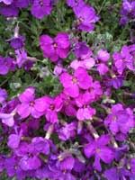

blue text for my paragraph!
This is a paragraph following a line break.
This shows how a horizontal rule looks, line appears under this.
This is bold text.
This is italicized text.
Cars I've Owned |
|
|---|---|
| Make | Model |
| Mercury | Topaz |
| Ford | Aerostar |
| Dodge | Caravan |
| Ford | Escort |
| Olds. | Cutlass |
| Ford | Aerostar |
| Dodge | Caravan |
Aliquam a nisl enim. Curabitur luctus ligula et mi ullamcorper eleifend. Aliquam neque diam, dignissim non gravida sit amet, elementum ornare massa. Aenean feugiat metus a ipsum euismod tincidunt. Sed libero odio, consectetur at dignissim at, luctus ac erat. Sed vestibulum dui in leo pellentesque convallis. Vestibulum eu libero libero. Donec orci ligula, mollis quis molestie eget, vestibulum in nibh. Fusce rutrum, nibh sed suscipit sagittis, eros ligula sagittis ante, eget egestas velit nibh eget turpis. Pellentesque habitant morbi tristique senectus et netus et malesuada fames ac turpis egestas. Maecenas sed lorem sed metus elementum faucibus sit amet sit amet nunc. Vestibulum ipsum elit, molestie molestie lobortis nec, pulvinar a leo. Nunc turpis eros, sollicitudin a euismod nec, scelerisque non eros. Maecenas et neque eu dolor viverra facilisis non id neque. Nulla adipiscing nulla et elit commodo condimentum. Mauris iaculis interdum consequat.
This is a link to The New Boston this will link to the second page.I like cats. I have owned 5 since Jacob was born. Cleo, Ruby, Misty, Elvis, and Kui.
We had two rats. One of them, Vincent, died. Now we only have one, Ingus. He's a blue dumbo rat.
Email Jen Broadway Google